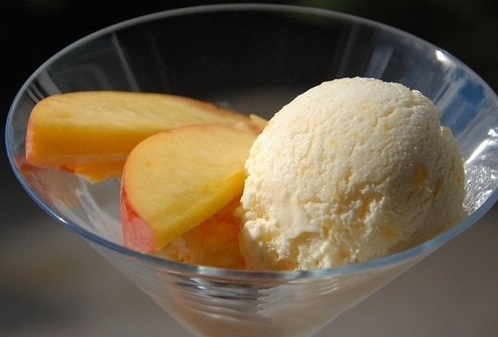

Рецепты

Ингредиенты:
Молоко 375 мл, сливки жирные 375 мл, персики 5 шт, сахар 60 г, яичные желтки 4 шт, лимоны ½ шт, ванильный экстракт 1 ч. л.
Рецепт:
1. Сливки и молоко влить в сотейник, добавить ванильный экстракт и прогревать до появления первых пузырьков.
2. Яичные желтки с сахаром взбить блендером с насадкой-венчиком в пышную, светлую массу, затем понизить скорость блендера и, продолжая взбивать, тонкой струйкой влить молочно-сливочную смесь.
3. Вернуть все в сотейник и, непрерывно перемешивая венчиком, прогревать на среднем огне. Когда масса заварится, снять с огня и вымешивать еще некоторое время, затем полностью остудить.
4. Очистить 4 персика от кожицы, полить выжатым из лимона соком и нарезать дольками, затем размять толкушкой, так чтобы остались небольшие кусочки.
5. Размятые персики добавить в сливочную смесь, все перемешать, перелить в контейнер с крышкой и отправить в морозильник застывать, периодически перемешивая массу ложкой.
6. Оставшийся персик нарезать дольками и украсить застывшее мороженое.
Готово!

13 ноября, 2022 года.